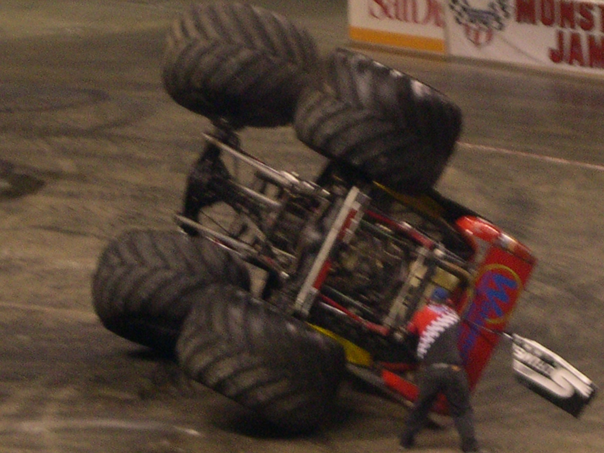

I don't quite remember how old I was when this picture was taken but I was definitely in elementary school.
Some background on where I was, who I was with, and why I was there:
I think I was in elementary school at the time while my dad still worked at Applied Materials. This was back when they were a huge sponsor for the HP Pavillion (now SAP Center) and my dad got tickets to a Monster Truck show. It wasn't a big deal at the time while I walked in with my dad, not really knowing where I was going or what I was even doing there because it was such a random occasion. Never growing up spending a lot of one on one time with my dad, it was kind of weird.
Scratch that...
Spending a lot of one on one time with my dad outside the house.
Anyways the process of walking through HP Pavillion, going to a seperate booth that overlooks the rest of the seats, having catered pizza, live televisions, and drinks was something out of the ordinary. But one thing I remembered was my dad telling me
Don't take anything, they might charge us for it.and that always stuck with me. Even as a pre-teenager I always thought why my dad always had this reoccuring thought of there being a consequence to things being too good to be true.
Financial Awareness
Growing up I never thought about the cost of toys, video games, food, rent, gas, or anything for that matter.
A video game at the was about $60 after tax.
If you worked minimum wage back then, you would be getting paid about $8.25 per hour.
So to buy that game after your paycheck gets taxed, you would have to work a full 8 hours to afford it. That's an entire work day... just for one video game.
Well ain't that some shit.
That's kind of insane isn't it? All this time I've been walking around like money falls out the sky and the reason why I stopped thinking that was is because of what my dad told me that day. He just made me realize how hard it is to earn money and that his entire life he's been working just so me, his kid, can have a measley video game and enjoy my life unlike his childhood upbringing.
The times we did spend together
was afterhours when my mom, brother, and sister were all asleep and my dad would be having his usual pre-sleep routine, a couple of beers and 96.5 KOIT soft rock music while sitting down on the couch by the kitchen. Growing up, this segment of time past 10:30-11PM were my favorite because it was when I could lay my head on my dad's comfortable beer belly and just hear him tell me stories about when he was growing up.
He would talk about how he grew up swimming in the ocean, catching fish, or just plain old being an adventurous kid in a third world country. Pretty straight forward, pretty plain and simple, pretty interesting... but that's when I realized there was a huge gap in the timestamps of each of these stories. My father would always talk about his time as a child, eating rice for dinner and explaining that when he yells "eat rice" in Vietnamese, it means dinner because they were so poor all they had to eat for dinner was rice. Or he would talk about the time when he was in Chicago on loans, in debt, and having nothing to eat because he couldn't afford to eat.
This was all the process of him making me aware, making me realize, and above all, making me appreciate.
The Puzzling Gap
Well I mentioned that gap, between the approximate ages of 12 and 18. I would get in depth with what I know, but the problem is that I don't know anything about that era of his life.
I'm sure that is why he is so overprotective of me, because of his foresight and paranoia of disasterous events that shroud his sanity. I don't know what it is that makes him mention to me that
You should always look for emergency exits.
Always keep your distance from cars in front of you because if they break, it's instant death.
Always prepare for the worst because you never know when something bad might happen.
Something bad probably happened to him that he doesn't want to get into. All he told me was that his father passed away when he was young, due to unknown circumstances. Maybe I don't want to know because I'll feel guilty that I couldn't do anything to prevent it. He's been through so much and the worst part about it all is that, I don't know a single thing that he's been through because he's always avoided telling me all the bad. Probably the sole reason why he wants to prevent any bad from happening, because he had encountered so much of it.
All he has given me is happiness and I don't even know it. I've taken him for granted all this time and I'm not ashamed to hear people say that I'm just like my dad. He's a fantastic father and a fantastic person that puts his family first, himself last, and cares about others. He just expects that others care about him too. That's it.
It's kind of amazing because this is just one story where someone's parents do everything they can for their kids when it's the case with tons of people, because after all, we are all children to someone.
But how do I feel about all of this?
Sometimes I cry and weep at night, knowing that my parents are paying USC's full tuition just so I can even further, live a stress-free life unlike their own.
Thanks Dad, for dealing with everything I put you through, said about you, and did to you. I'll make it up to you...
the day I become a father.
My dad at the monster truck show, not pictured with me sadly.
 Ay lmao.